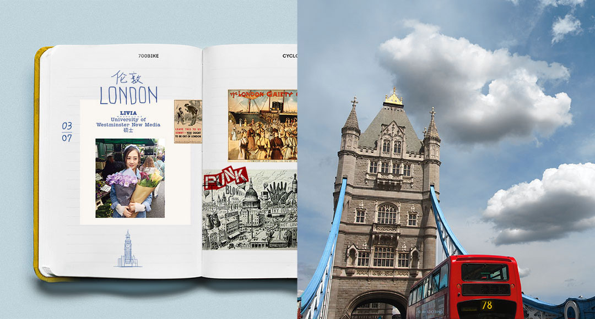
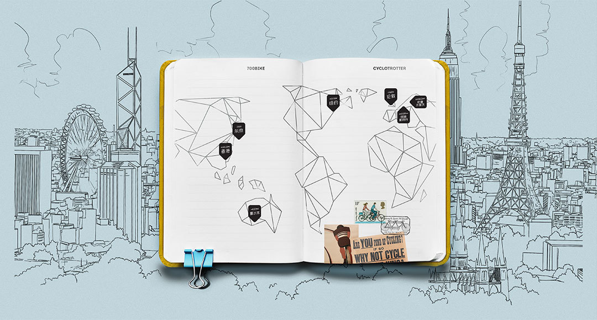


把自行车停在Covent Garden里10万个白色气球组成的巨大心脏下
清净的时刻总是能被自行车找到。
即便推着它走都好像身边带风，随时起飞。
如果没有用心的逛一逛，就称不上是个真正的londoner。
下午的brick lane。
- 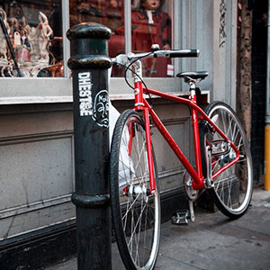
只是随手一停，就和brick lane的一家商店融为一体
在某个红色砖瓦的角落里你知道有你的红色自行车在等你。
抢眼的总是身边的一抹红光。
谁说骑行只能正着骑？儿童节我非要倒着骑。
马路边停放着的自行车已经成为伦敦最好看的景色
找这个红电话厅来配你
Hey, big ben. Hey, London.
- 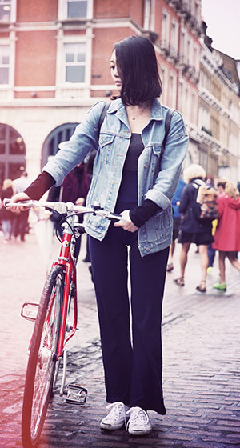
下雨天的伦敦，
霓虹灯永不灭，车流永不停的牛津街与摄政街。
看，这大概可以称作默契。
除了枕头大战和丧心病狂的鸽子，特拉法加广场还可以这样。
红色自行车、柠檬色店铺，跟没有人的soho街道最配。
下雨天的Covent garden，没有伞，有我和小红。
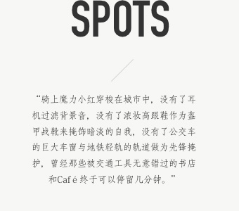
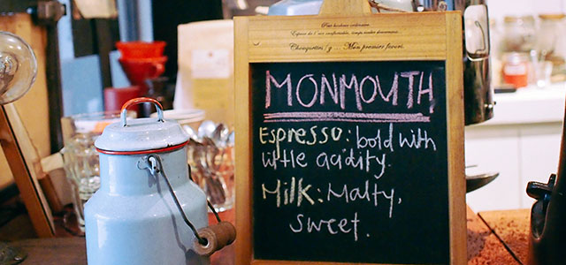
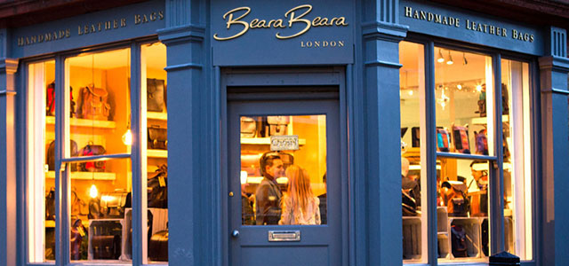
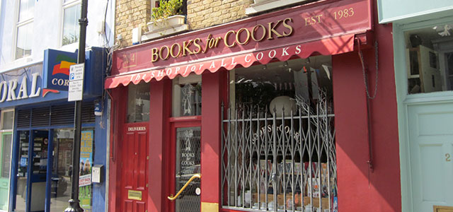
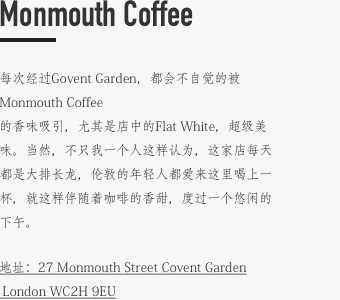
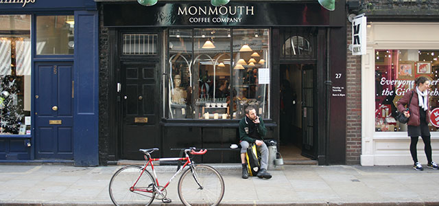
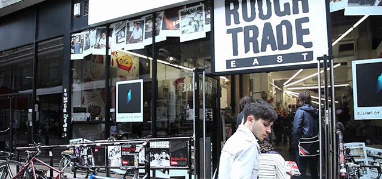
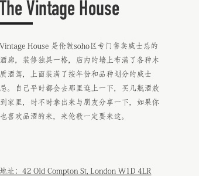
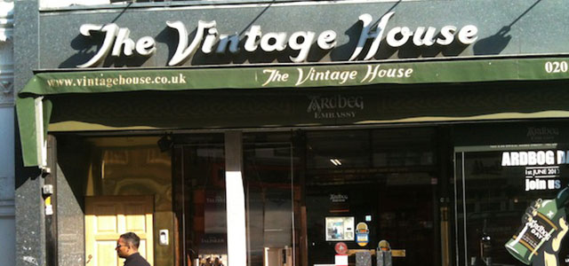
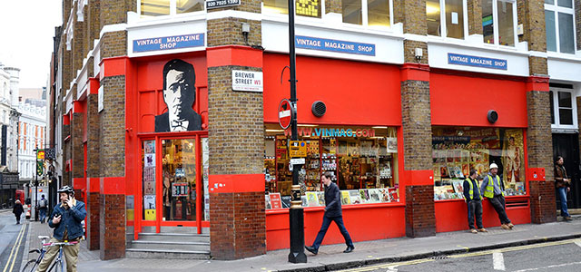
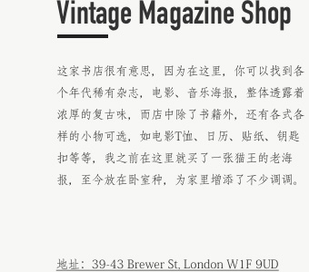
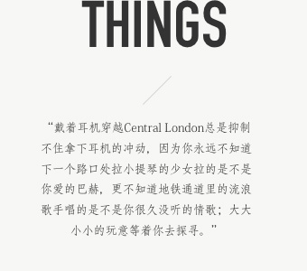
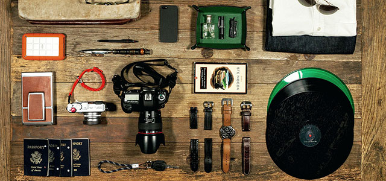
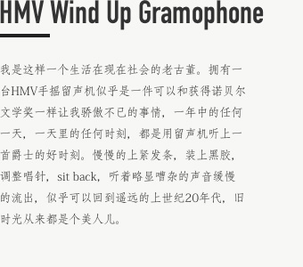
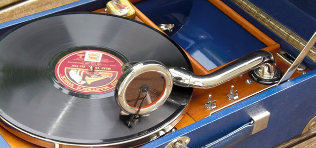
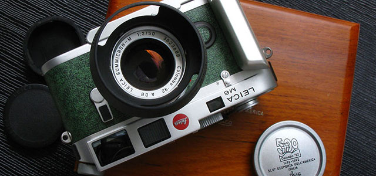

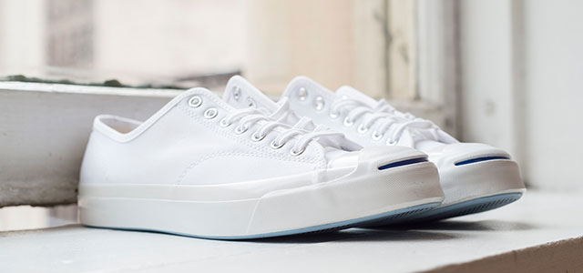
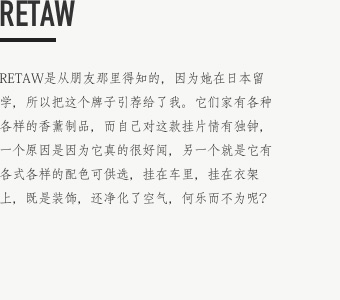
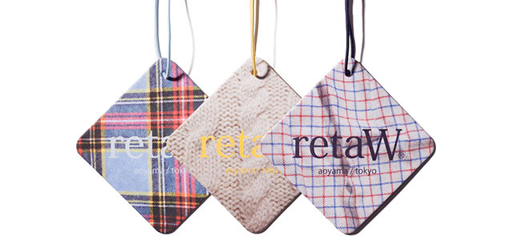
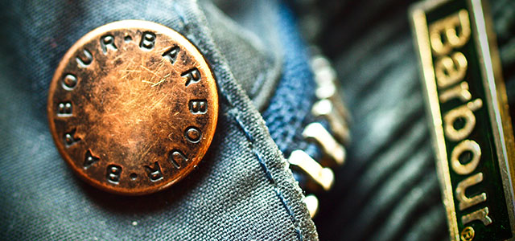
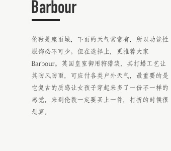
BE PART OF IT
第8人可能就是你，
瑞士7夜9天之行
7位达人，不同身份，分散在世界各个角落，但他们都有个共通点，那便是热爱生活，
享受骑行所带来的乐趣。其实诸位也可以像他们一样，将单车和生活完美融合在一起，
第八人说不定就是你。

活动规则:
即日起至9月14日晚24点
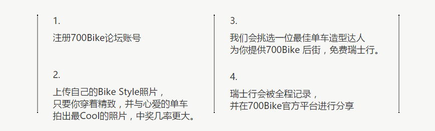